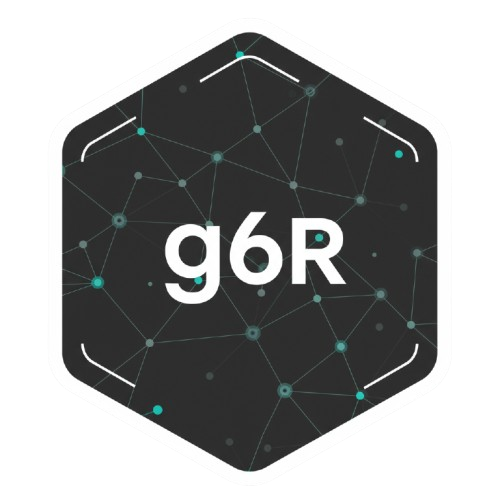

g6R
g6R provides R bindings to the G6 graph library.

shinyAppDir(system.file("examples", "demo", package = "g6R"))Installation
You can install the development version of g6R from GitHub with:
# install.packages("pak")
pak::pak("cynkra/g6R")Example
To create a g6 graph:
library(g6R)
nodes <- data.frame(
id = as.character(1:10),
label = as.character(1:10)
)
# Generate random edges
edges <- data.frame(
source = c("2", "6", "7"),
target = c("1", "3", "9")
)
g6(nodes, edges) |>
g6_options(
node = list(
style = list(
labelBackground = TRUE,
labelBackgroundFill = '#FFB6C1',
labelBackgroundRadius = 4,
labelFontFamily = 'Arial',
labelPadding = c(0, 4),
labelText = JS(
"(d) => {
return d.id
}"
)
)
)
) |>
g6_layout(d3_force_layout()) |>
g6_behaviors(
"zoom-canvas",
drag_element_force(fixed = TRUE),
click_select(
multiple = TRUE,
onClick = JS(
"(e) => {
console.log(e);
}"
)
),
brush_select(),
create_edge()
) |>
g6_plugins(
"minimap",
"tooltip",
context_menu()
)